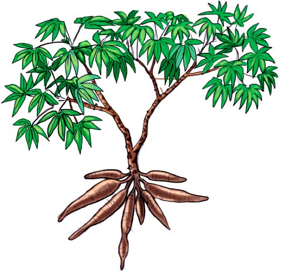
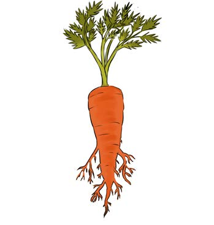

Roots
The main function of roots is to absorb water, minerals and nutrients from soil. Roots also hold the plant firmly in soil. In some plants, roots store food. Examples of plants that store food in their roots are carrots, cassava and sweet potatoes. Figure 19 shows plants that store food in their roots (cassava and carrot).


Figure 19: Plants that store food in roots
Stem
The stem of a plant holds the leaves, flowers and fruits. The stem also transfers water, nutrients and minerals from the roots to leaves. The stems of some plants store food. Examples of plants that store food in the stems are pineapples, onions and sugarcane. Figure 20 shows plants that store food in their stems (onion and sugarcane).